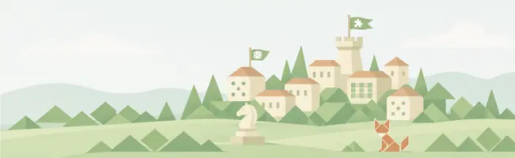
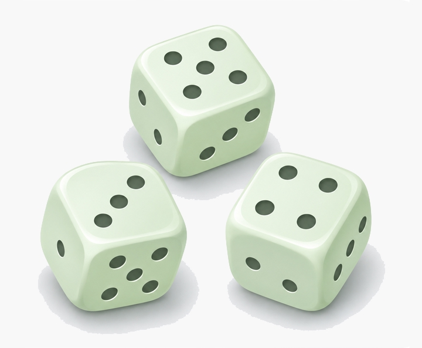
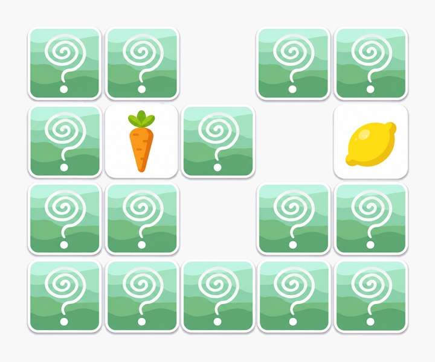

A collection of thoughtful browser puzzle games – logic, deduction, memory, and more.
Fill the grid with numbers so the inequalities are satisfied.

Roll the dice and aim for the best scoring combination.
Crack the secret color code using logic and clever guesses.

Find all matching pairs by turning over cards and using your memory.
Arrange geometric pieces to recreate a target shape.
A psychologist by education, a programmer by profession, and a writer by inclination.
Programming started as a hobby for me before it turned into a profession. I hope writing, which is currently in the hobby stage, will soon follow that path. I'm setting my sights quite high.
Solving puzzles and playing brain-teasing games like Sudoku and Mastermind is another hobby of mine. No ambition to ever turn it into a profession, :-) but using it as a topic for my little personal programming projects is next-level fun.
Every game on this website has a story behind it. Mastermind was the first one I wrote, mostly to find out whether I could create something in JavaScript that actually worked. Memory came along later, for much the same reason. Shape Puzzles was born out of nostalgia. One of the puzzles in the collection was among my favorite childhood toys. Dice Game, on the other hand, was driven by frustration. You know how the best combinations sometimes come up precisely when you can no longer use them? My idea was to also let players make their decisions after all the dice rolls and combinations were already known. Being able to compare after-the-fact results with regular game scores should be gratifying, and also interesting.
All four games were, in a way, learning projects. They gave me opportunities to experiment with various technologies and improve my programming skills. I didn’t have any specific plans for them. And so they spent several years sitting on my hard drive. Some finished, some not quite.
Then AI came along, and with it an idea for Futoshiki: first, to use AI to write a puzzle generator algorithm (something I knew was too much for me) and later to experiment with generating puzzles on the fly. That second feature is currently hidden in the online version – turns out it was too much even for AI.
So now I had five games. A proper little collection! That thought made me dig out the older projects, fix what needed fixing, bring them up to date and redesign the UI to make them look like an actual collection. Among other things, I rewrote Memory and Mastermind from plain JavaScript to Angular – also because I wanted some Angular practice. And yes, I used AI to help me along the way, too.
Once the games were finally in decent shape, the next step seemed obvious: give them a shared home. And the step after that was even more natural: put them online, where other people could actually play them. And so Puzzlepolis was born.
These are all games I personally enjoy playing. They're quite different from one another, but they have something in common: they make you think. Remember things. Work things out. Experiment, strategize. You won't find shooters or action games here… at least for now. Puzzlepolis is a place for mental stretching rather than joystick swinging.
I hope you'll enjoy it!